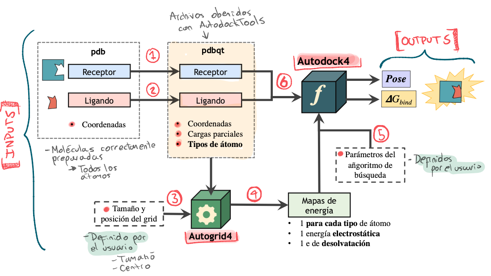

Docking con Autodock 4.2
Acoplamiento Molecular con AD4
Flujo de ejecución de Autodock 4.2:

Obtención y preparación de las moléculas
Ambiente de trabajo
- Crea una carpeta de trabajo para guardar los archivos que se irán
generando.
Obtención de la Proteína
- Información sobre la proteína CDK2.
Descarga de la proteína
Abrir UCSF Chimera y en la opción “File > Fetch by id…” descargar del pdb la proteína 5IF1.
Ahora guardamos en un archivo
.pdbúnicamente los átomos de la proteína CDK2:- Selecciona únicamente los átomos de la proteína CDK2:
- Visualiza todos los átomos del cristal mediante “Actions > Atom/Bonds > show”
- Ve a “Favorites > Command Line” ➡︎ Se abrirá una una línea de comandos en la parte inferior.
- En la línea de comandos escribe:
sel protein & :.a➡︎ Esto permite seleccionar únicamente los átomos de la proteína CDK2 de la cadena A.
- Con los átomos seleccionados ir a “File > Save PDB…” y
en la ventana que se abrirá seleccionar la opción “Save selected
atoms only” y guardar el archivo
.pdbde la proteína: prot_unprep.pdb
- Selecciona únicamente los átomos de la proteína CDK2:
Prepara la estructura de la proteína con PDB2PQR:
- Tener el ambiente de conda
dockactivado y localizarse en la carpeta de trabajo (wd_dk). - Ejecutar PDB2PQR con alguno de los siguientes comandos (dependiendo de la versión con la que cuentes):
# Para la versión más reciente
pdb2pqr30 --ff='AMBER' --ffout='AMBER' \
--with-ph=7.0 --drop-water --keep-chain \
--pdb-output prot.pdb \
prot_unprep.pdb pqr_file.pqr# Para versiones anteriores
pdb2pqr --ff=amber --with-ph=7.0 --ffout=amber \
--ph-calc-method=propka \
--chain prot_unprep.pdb prot.pdbEsto creará un nuevo archivo prot.pdb con la nomenclatura correcta en Amber y con los estados de protonación a pH 7 de los residuos ionizables.
prot.pdb
📂 wd_dk
│ 📜 prot_unprep.pdb
│ 📜 pqr_file.pqr
│ 📜 pqr_file.log
│ 🗒 prot.pdbObtención de la Molécula Ligante
Existen múltiples bases de datos para poder descargar librerías de moléculas, para efectos del taller recurriremos a la base de datos PubChem para descargar la “estructura” de la molécula de ATP, que usaremos como ligando.
- Da click en el siguiente link para acceder a Pubchem: página ATP Puchem.
- En la sección 2.1.4 Canonical Smiles verás la siguiente cadena de texto que corresponde a la representación de la molécula en formato SMILES:
C1=NC(=C2C(=N1)N(C=N2)C3C(C(C(O3)COP(=O)(O)OP(=O)(O)OP(=O)(O)O)O)O)N
- Copia el SMILES en un archivo de texto en la carpeta de trabajo, guardándolo como smiles_atp.smi.
- Ahora vamos a convertir el SMILES a formato
mol2utilizando Open Babel. En una terminal, con el ambientedockactivado y estando enwd_dkejecuta lo siguiente:
Lo anterior permite convertir el SMILES a una estructura
mol2utilizando el campo de fuerza para generar las coordenadas 3d, añadir hidrógenos a pH 7, y añadir cargas parciales de Gasteiger. Puedes revisar aquí más sobre la ejecución deobabel.
- Explora el archivo ATP.mol2 con un editor de texto y/o UCSF-Chimera para verificar que la estructura se haya generado correctamente.
@<TRIPOS>MOLECULE
*****
47 49 0 0 0
SMALL
GASTEIGER
@<TRIPOS>ATOM
1 C 3.2487 -1.4840 1.0155 C.ar 1 UNL1 0.1205
2 N 2.6622 -2.4623 0.2886 N.ar 1 UNL1 -0.2188
3 C 1.7335 -2.1092 -0.6300 C.ar 1 UNL1 0.1472
4 C 1.3906 -0.7463 -0.7500 C.ar 1 UNL1 0.1473
5 C 2.1064 0.1471 0.0336 C.ar 1 UNL1 0.1674ATP.mol2
📂 wd_dk
│ 📜 ...
│ 📜 smiles_atp.smi
│ 🗒 prot.pdb
│ 🗒 ATP.mol2Bases de datos para docking:
Consulta aquí otras bases de datos útiles para encontrar moléculas para tus ensayos de docking:Autodock 4.2
Usaremos los siguientes dos archivos que preparamos en las fases previas:
Preparación de los archivos necesarios para Docking (PDBQT)
En esta sección se preparan los archivos de la proteína y el ligando en formato PDBQT, los cuales son necesarios para la ejecución de AD4.
Activar los scripts de ejecución
Si estas usando la máquina virtual ejecuta el siguiente comando para agregar al path el directorio con los scripts de análisis.
echo \
'export PATH="/home/ssb/miniconda3/envs/ad4/MGLToolsPckgs/AutoDockTools/Utilities24/:"$PATH' \
>> ~/.zshrcSi no estás usando la máquina virtual deberás sustituir la parte
/home/ssb/miniconda3/con la ruta que corresponda a tu sistema. Revisa el siguiente link para más información: MGLTools on Linux
Preparación del ligando
Esta fase consiste en utilizar las coordenadas del archivo ATP.mol2 para generar un archivo PDBQT al se le incluirá la siguiente información:
- Q: Cargas parciales de Gasteiger.
- T: Tipo de Átomo según el campo de fuerza usado por AD4.
Recursos:
- Más sobre los parámetros del campo de fuerza empleado por AD4, incluyendo los tipos de átomos usados y sus constantes asociadas: AD4 force field parameters
- How to prepare a ligand file for AutoDock4?
- Activar el ambiente de conda
ad4y localizarse en la carpeta de trabajo. - Ejecutar el siguiente comando:
# Genera el archivo PDBQT del ligando
prepare_ligand4.py -l ATP.mol2 -v -o ATP.pdbqt \
-d ligand_dict.py -U 'nphs_lps' -CPuedes ejecutar simplemente
prepare_ligand4.pyo abrir el archivo prepare_ligand4.py con un editor de texto para saber qué indica cada parámetro usado.
- Pon particular atención en los parámetros-U 'nphs_lps'y-Cusados.
- ¿Qué relación hay entre el parámetro-U 'nphs'y el modelo United-Atom de Autodock?
- Inspecciona el archivo de salida llamado ligand_dict.py, la información que contiene será necesaria más adelante.
summary = d = {}
d['ATP'] = {'atom_types': ['A', 'C', 'HD', 'N', 'NA', 'OA', 'P' ],
'rbonds':15,
'zero_charge' : [],
}
- ¿Qué tipos de átomo contiene la molécula de ATP?
- ¿Cuántos enlaces rotables tiene?
- ¿Hay algún átomo que no posea carga parcial?
- Inspecciona el archivo ATP.pdbqt mediante un editor de texto.
Preparación del receptor en formato PDBQT
- Ejecuta lo siguiente:
- ¿Qué tipo de cargas parciales fueron asignadas a la proteína? ¿Gasteiger o Kollmann?
- Revisa los parámetros que requiere el script
prepare_receptor4.py➡︎ Link- ¿Por qué usar una carga u otra?
- Compara los scripts
prepare_receptor.pyyprepare_receptor4.py(usado aquí).- Revisa la discusión entre el autor de Autodock y un usuario en este link.
- También la publicación correspondiene a Autodock4.
- Inspecciona el archivo prot.pdbqt mediante un editor de texto, verifica que las cargas parciales y los tipos de átomos hayan sido añadidos.
📂 wd_dk
│ 📜 prot_unprep.pdb
│ 📜 smiles_atp.smi
│ 📜 prot.pdb
│ 📜 ATP.mol2
│ 🗒 ligand_dict.py
│ 🗒 prot.pdbqt
│ 🗒 ATP.pdbqtEjecución de Autogrid
Archivo de parámetros de Autogrid (GPF)
En este paso se creará un archivo de parámetros para el ejecutable
autogrid4: el archivo .gpf (grid parameter
file).
Este gpf es creado a partir de información del receptor
y la(s) molécula ligando, y especifica lo siguiente:
- El espacio de búsqueda con respecto al receptor.
- Centro y tamaño de la rejilla
- La distancia entre los nodos de la rejilla (resolución).
- Los tipos de átomos a usar en los ligandos y el receptor.
Determinar el centro y tamaño de la rejilla
- Activar el ambiente de conda
ad4y localizarse en la carpeta de trabajo. - Ejecutar:
Esto abrirá la herramienta llamada AutoDockTools y cargará el archivo
pdbqtde la proteína.
- En el menú color café titulado como ADT4.2 ve a Grid > Grid Box…

- En la nueva ventana podrás modificar el tamaño y posición de la caja que aparece en el visualizador.
- Mueve los parámetros hasta posicionar la caja sobre el sitio activo de la proteína:
La imagen superior muestra un ejemplo de los parámetros elegidos.
- Deja el parámetro de Spacing (angstrom) con su valor por defecto: 0.375 Å ≈ 1/4 de la longitud del enlace C-C.
- 🚨 Toma nota de los parámetros, es decir, de las dimensiones en \(x, y, z\) de la caja, así como de la posición \(x,y,z\) de la misma.
Crear el archivo GPF
- Ten a la mano la siguiente información necesaria para el siguiente
paso:
- Tipos de átomos del ligando listados en el archivo
ligand_dict.py - Dimensiones y centro del grid (
'-80,-46,10')
- Tipos de átomos del ligando listados en el archivo
- Ejecuta lo siguiente:
# ¿Identificas qué significa cada uno de los parámetros?
prepare_gpf4.py \
-r prot.pdbqt \
-l ATP.pdbqt \
-d ligand_dict.py \
-p npts='66,52,60' \
-p ligand_types='A,C,HD,N,NA,OA,P' \
-p gridcenter='-80,-46,10' \
-o GPF.gpf¡Alerta! 😱
-
Por esta ocasión debemos especificar manualmente los tipos de átomos del
ligando con (
-p ligand_types=‘A,C,HD,N,NA,OA,P’). - Revisa el sigiente vínculo para más información al respecto: How to prepare a grid parameter file for AutoGrid4?
- Inspecciona el archivo GPF.gpf:
npts 66 52 60 # num.grid points in xyz
gridfld prot.maps.fld # grid_data_file
spacing 0.375 # spacing(A)
receptor_types A C NA OA N SA HD # receptor atom types
ligand_types A C HD N NA OA P # ligand atom types
receptor prot.pdbqt # macromolecule
gridcenter -80 -46 10 # xyz-coordinates or auto
smooth 0.5 # store minimum energy w/in rad(A)
map prot.A.map # atom-specific affinity map
map prot.C.map # atom-specific affinity map
map prot.HD.map # atom-specific affinity map
map prot.N.map # atom-specific affinity map
map prot.NA.map # atom-specific affinity map
map prot.OA.map # atom-specific affinity map
map prot.P.map # atom-specific affinity map
elecmap prot.e.map # electrostatic potential map
dsolvmap prot.d.map # desolvation potential map
dielectric -0.1465 # <0, AD4 distance-dep.diel;>0, constant📂 wd_dk
│ 📜 ...
│ 🗒 prot.pdbqt
│ 🗒 ATP.pdbqt
│ 🗒 GPF.gpfEjecutar Autogrid
- Ejecuta el siguiente comando:
El proceso tomará algunos segundos o minutos según el número de tipos de átomos y el tamaño de la rejilla.
Durante esta fase un átomo de “prueba” (probe atom), para cada tipo de átomo del ligando, es colocado en cada punto del grid, y se calcula la energía (para cada término del campo de fuerza) de interacción de este átomo con cada átomo de la proteína. Dicha energía es asignada a cada punto del grid según la función de puntaje de AD4.
De la misma manera se calculan los maps para los potenciales electrostáticos y de solvatación.
Como resultado se creará el archivo
prot.maps.fldy los archivos.map, correspondientes a los grid maps de cada tipo de átomo.
- *.map: Posee los valores de energía obtenidos para cada punto del grid para un tipo de átomo en particular. Los valores están dispuestos uno por línea, y ordenados de forma anidada: \(z(y(x))\).
- *.maps.fld: Archivo utilizado durante el docking para verificar que los archivos
mapsy las caracteristicas del grid son compatibles.
- *.xyz: Archivo que establece los límites (intervalos) del del grid en \(x_1:x_2, y_1:y_1, z_1:z_2\).
📂 wd_dk
│ 📜 ...
│ 📜 GPF.gpf
│ 📜 GPF.glg
│ 🗒 prot.pdbqt
│ 🗒 ATP.pdbqt
│ 🗒 *.map
│ 🗒 *.maps.fld
│ 🗒 *.maps.xyzEjecución de Autodock4.2
Archivo de parámetros de Autodock (DPF)
En este paso se crea el archivo de parámetros para el ejecutable
autodock4: el archivo .gpf (grid parameter
file), los cuales utilizará para llevar a cabo el acoplamiento
entre el ligando y el receptor, incluyéndo aquellos que usará para el
algoritmo de búsqueda. Especifica además los archivos .map a utilizar
para facilitar el cálculo de la función de puntaje.
- Ejecuta el siguiente comando:
# ¿Identificas qué significa cada uno de los parámetros?
prepare_dpf42.py \
-l ATP.pdbqt \
-r prot.pdbqt \
-o DPF.dpf \
-p ga_num_evals='1000000' \
-p ga_run='3' \
-p ga_num_generations='27000' \
-p ga_pop_size='150' \
-p unbound_model='bound' \
-p rmstol='2.0' \
-p outlev='adt' \
-v \
-s
- ¿Se usará un algoritmo Genético o Simulated Annealing?
- ¿Cual es el número máximo de evaluaciones de la función de scoring?
- ¿Cuantas corridas/ensayos independientes de docking se realizarán?
- ¿Qué parámetros de peso \(W\) serán utilizados en la función de scoring? Es decir,¿Qué modelo de función de puntaje será utilizado? ➡︎ Consulta los modelos disponibles.
- ¿Qué significa el parámetro
rmstol?
¡Alerta! 😱
- Seguramente los parámetros usados en este ejemplo no sean suficientes para tener un resultado válido.
- Revisa el sigiente vínculo para ver recomendaciones de los parámetros y sus valores más recomendados: Which values of the genetic algorithm parameters do you normally use?
- Inspecciona el archivo DPF.dpf:
autodock_parameter_version 4.2 # used by autodock to validate parameter set
outlev adt # diagnostic output level
intelec # calculate internal electrostatics
seed pid time # seeds for random generator
ligand_types A C NA OA N P HD # atoms types in ligand
fld prot.maps.fld # grid_data_file
map prot.A.map # atom-specific affinity map
map prot.C.map # atom-specific affinity map
map prot.NA.map # atom-specific affinity map
map prot.OA.map # atom-specific affinity map
map prot.N.map # atom-specific affinity map
map prot.P.map # atom-specific affinity map
map prot.HD.map # atom-specific affinity map
elecmap prot.e.map # electrostatics map
desolvmap prot.d.map # desolvation map
move ATP.pdbqt # small molecule
about 3.852 3.682 -1.331 # small molecule center
tran0 3.852 3.682 -1.331 # initial coordinates/A or random
quaternion0 0. 0. 0. 1. # initial orientation
dihe0 0. 0. 0. 0. 0. 0. 0. 0. 0. 0. 0. 0. 0. 0. 0. # initial dihedrals (relative) or random
torsdof 15 # torsional degrees of freedom
rmstol 2.0 # cluster_tolerance/A
extnrg 1000.0 # external grid energy
e0max 0.0 10000 # max initial energy; max number of retries
ga_pop_size 150 # number of individuals in population
ga_num_evals 1000000 # maximum number of energy evaluations
ga_num_generations 27000 # maximum number of generations
ga_elitism 1 # number of top individuals to survive to next generation
ga_mutation_rate 0.02 # rate of gene mutation
ga_crossover_rate 0.8 # rate of crossover
ga_window_size 10 #
ga_cauchy_alpha 0.0 # Alpha parameter of Cauchy distribution
ga_cauchy_beta 1.0 # Beta parameter Cauchy distribution
set_ga # set the above parameters for GA or LGA
sw_max_its 300 # iterations of Solis & Wets local search
sw_max_succ 4 # consecutive successes before changing rho
sw_max_fail 4 # consecutive failures before changing rho
sw_rho 1.0 # size of local search space to sample
sw_lb_rho 0.01 # lower bound on rho
ls_search_freq 0.06 # probability of performing local search on individual
set_psw1 # set the above pseudo-Solis & Wets parameters
unbound_model bound # state of unbound ligand
ga_run 3 # do this many hybrid GA-LS runs
analysis # perform a ranked cluster analysisAnálisis de los Resultados 🎯
Análisis del archivo DLG.dlg
- Inspecciona el archivo DLG.dlg y localiza la siguiente información (usa SublimeText o algún otro editor de texto que te sea cómodo):
***
Random number generator ...
***
Ligand PDBQT file = "ATP.pdbqt"
***
Total charge on ligand ...
REMARK ... active torsions:
Number of Rotatable Bonds in Small Molecule = ... torsions
Number of atoms in ligand: ...
Number of non-hydrogen atoms in ligand: ...
Number of vibrational degrees of freedom of ligand: ...
Number of torsional degrees of freedom = ...
Estimated loss of torsional free energy upon binding = ... kcal/mol
***
🚨 🚨 🚨 🚨 🚨 🚨 🚨 🚨
DOCKED: MODEL 1
DOCKED: USER Run = 1
...
DOCKED: USER Estimated Free Energy of Binding = ??? kcal/mol [=(1)+(2)+(3)-(4)]
DOCKED: USER Estimated Inhibition Constant, Ki = ??? uM (micromolar) [Temperature = 298.15 K]
DOCKED: USER
DOCKED: USER (1) Final Intermolecular Energy = ??? kcal/mol
DOCKED: USER vdW + Hbond + desolv Energy = ??? kcal/mol
DOCKED: USER Electrostatic Energy = ??? kcal/mol
DOCKED: USER (2) Final Total Internal Energy = ??? kcal/mol
DOCKED: USER (3) Torsional Free Energy = ??? kcal/mol
DOCKED: USER (4) Unbound System's Energy [=(2)] = ??? kcal/mol
🚨 🚨 🚨 🚨 🚨 🚨 🚨 🚨
***
DOCKED: MODEL 2
....
DOCKED: MODEL 3
....
....
CLUSTERING HISTOGRAM
____________________
....
- ¿Qué información contiene dicho archivo?
- ¿Qué significa el término torsional degrees of freedom? ¿Cómo afecta a la energía final de interacción?
- ¿Cuántos
MODELhay y a qué corresponde cada uno?- ¿Cuál es la energía libre de interacción total estimada del primer
MODEL?- ¿Es el primer
MODELla pose con la mejor energía?- ¿Cuáles son los cuatro términos que autodock usa para estimar dicha energía?
- ¿Cuáles es la contribución de las interacciones electrostáticas?
- ¿Cómo se calcula la constante de inhibición \(K_i\) y qué valor tuvo?
- ¿Por qué los valores de los términos
(2) Final Total Internal Energyy(4) Unbound System's Energyson iguales?
Extrae un resumen de los resultados
- Ejecuta el siguiente comando:
- Inspecciona los resultados:
lowestEne.., #runs, #cl, #LEC, LE, rmsd_LE, #hb, #ESTAT, #HB, #VDW, #DSOLV, #ats, #tors, #h_ats, #lig_eff
./DLG, 3, 3, 1, -4.26, 101.1168, 5, -0.3993, -2.6203, -9.5273, 4.1757 39, 15, 8, -0.1374🚨 🚨 🚨 ¿Qué significa cada una de las columnas? 🚨 🚨 🚨
1. Nombre
2. # runs (número de corridas de docking)
3. # cluster al que pertenece (según el criterio de RMSD entre poses)
4. # ranking de energía del cluster
5. Lowest Energy (Energía libre de unión)
6. RMSD de la pose con respecto a la conformación inicial de la molécula
7. # de enlaces de hidrógeno
8. E elect
9. E de HB
10. E de vDW
11. E de Desolv
12. # átoms
13. # enlaces rotables
14. # de Hs
15. Eficiencia del ligando (LE/#ats pesados)Recursos Extras
Explora los resultados de docking usando ADT o Chimera
- Explora los resultados usando AutoDockTools:
- Tutorial usando la interfaz de AutoDockTools
- Video Tutorial:
>
> Muy buen tutorial en español usando la interfaz gráfica.
- Explora los resultados usando Chimera
Referencias
- Morris, G. M. et al. (1996). [..] AutoDock 2.4. Journal of Computer-Aided Molecular Design.
- Morris, et al. (1998) Automated Docking Using a Lamarckian Genetic Algorithm and an Empirical Binding Free Energy Function. Journal of Computational Chemistry, Vol. 19, No. 14, 1639]1662
- Huey, R., Morris, G. M., Olson, A. J. and Goodsell, D. S. (2007), A Semiempirical Free Energy Force Field with Charge-Based Desolvation J. Computational Chemistry, 28: 1145-1152.
- Ashtawy, H.M. & Mahapatra, N.R., 2018. Journal of Bioinformatics and Computational Biology, 16(3).